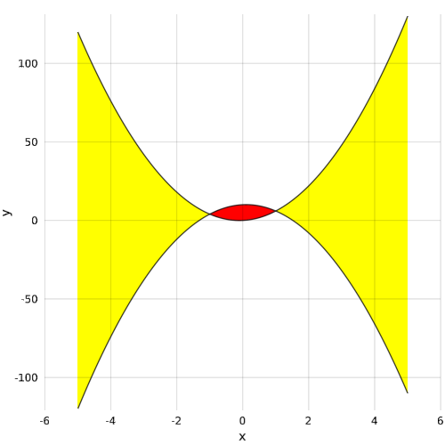

band
Fill between
Tags: 2d, band, fill_between, lines.
using Makie
using AbstractPlotting: fill_between!
x = -5:0.01:5
y1 = -5 .* x .* x .+ x .+ 10
y2 = 5 .* x .* x .+ x
lines(x, y1)
lines!(x, y2)
fill_between!(x, y1, y2, where = y2 .> y1, color = :yellow)
fill_between!(x, y1, y2, where = y2 .<= y1, color = :red)
